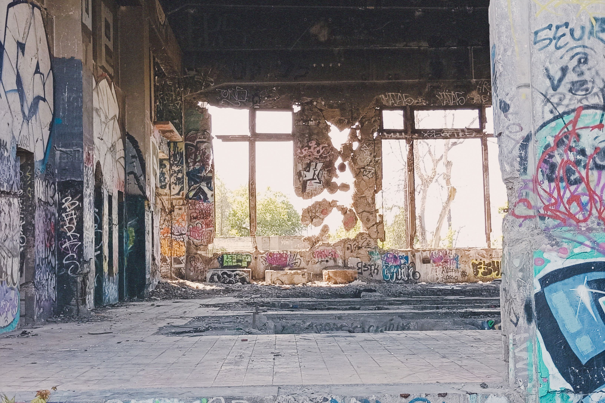
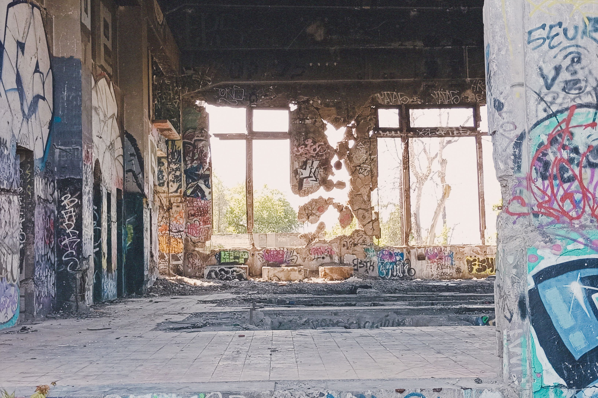

Línea de tren (Quilicura)

Titulo: "treasure map: linea de tren (Quilicura)"
Medio: Instalación
Material: Objeto
encontrado
Año: 2023


Palos y Tronco
Una primera intención en esta exploración a este espacio antiguo y sobre cargado era evitar entregarle una sobre atención a la propia línea de tren y mejor investigar el ecosistema creado a su alrededor.
Entre la vegetación encontré estos palos que eran parte de un antigüo vallado de alambre de puas, caido, cortado, quemado. Procedí a rescatarlos de enmedio del pasto, del poco alambre que aun se ocultaba enrollado bajo el pasto. Es curiosos que estos divisores de regiones puedan estar por decadas en la naturaleza pero siempre en algún momento el propio paisaje mutante y reconquistador, los terminan tirando y absorviendo, por lo cual podemos concluir que nada que divida al paisaje sobrevivirá al paisaje.
El primer palo
Y llego con el primer palo de valla, a lo que el profe me dice "Ya Benjamín buen primer avance, te recomiendo que pruebes a tallar por primera vez en otra madera para que te acostumbres al material y no dañes esta pieza tan unica que trajiste, como no tienes otor puedes retirarte nomás, estás listo".
Y le respondo "no, deme diez minutos". "Mucho me parece para un artista" responde de vuelta. Terminando "Bueno, cinco minutos entonces"
Entonces en eso llego al galpon efectivamente cinco minutos después con un árbol casi entero de unos dos metros aprox.

Montaje
Los palos estan montados en el muro con artefactos metalicos por detrás que dan un resultado casi flotante, mande a hacer una pieza en torno que era capaz de sujetar uno de los palos por si solo, y aprovecho de decir que, por la chucha que caro son los tornos, tres de estos artefactos costaban al rededor de 12mil pesos, solo mandé a hacer uno e intente replicar el resto en impreción 3D, mala idea. Encima cuando consigo el dinero para pagar las otras dos que me faltaban rsulta que el tornero era novato y por eso cobraba barato y dos que se había ido de vacaciones en pleno diciembre. La solución fueron soportes para repisa invisibles, muy recomendado.
1. "Calor urbano, mira donde nos lleva".
2. "Nada que divida al paisaje resistirá al paisaje".
3. "Tajo rural que separa la población de la industría".
Parachoque
Entre el pasto y otros objetos que la gente se deshace cerca de la entrada al camino que recorre este estrecho espacio, a un lado del camino, estaba este parachoque, con marcas que ya no se saben que significan, con un icono ortero en el reverso. Ya no se sabrá nunca que fué del resto de piezas, porque está acabó ahí, porque estaba algo más lejos de la entrada, hay tantas historias turbias con autos en Quilicura que me llevan a pensar en las locuras que pudieron haberle pasdo, pero, ahora este objetos es hijo del sitio eriazo, ahora mismo su pasado fue perternecer a ese espacio y ahora es parte de mi obra.
"Puntos de referencia en unos caminos sin nombre. Historias sin rostro que mirar. Es como un lugar que rumorea tener un tesoro".
 

Adoquín
En la vía del tren de Quilicura, muy cerca de la estación de metro Ferrocarril, se encuentra una casona que en mis sospechas devio ser una antigua parada de trenes para el pequeño pueblo de Quilicura tan lejano a la capital, a todas las personas mayores a quienes les pude preguntar de ella dicen que ya llevaba mucho ahí anetes de que nacieran ellos o incluso sus padres, y claro, investigando la estacion data de 1863. Y es curioso que me han dicho que aun ahí ya estaba abandonado pero según fuentes dicen que su clausura ocurrió en 1992.
"No queda nadie que lo haya vivido".